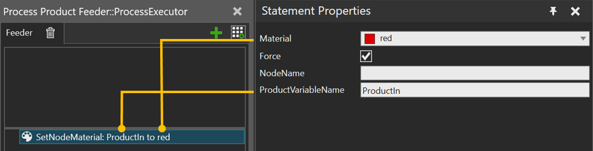

A SetNodeMaterial statement allows you to change the material of the defined node (link) of the component of a product instance.

| Name | Description |
| Material | Select the material. |
| Force | If Selected, Inherit node's material to all geometries in the node by using material inheritance setting VC_MATERIAL_FORCE_INHERIT_NODE. Else, material inheritance setting is not changed. |
NodeName |
Name of the affected node. Leave empty to change the component’s root node. |
ProductVariableName |
Name of the Process variable where to get the Product instances. |